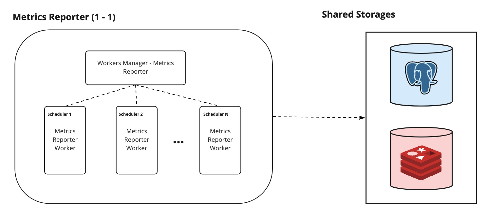

Architecture
Maestro Next is a composition of different modules. Internally they are all part of the same code base but could be executed by giving the right arguments to the command line (or to your docker container entry point). E.g. go run main.go start [MODULE_NAME]
Maestro is composed of Management API, Rooms API, Operation Execution Worker, Runtime Watcher Worker, and Metrics Reporter Worker.
Each module has its responsibilities and is divided apart in a way to avoid mixing the execution process. Each module was thought to avoid parallel problems and to give the client more visibility about which Operations are being executed and their respective status.
Maestro modules
Note: Maestro currently only supports Kubernetes as Game Rooms runtime system. So Workers interact with them.
Management API
Management API is the module responsible for receiving user requests. It accepts gRPC and HTTP requests and provides several kinds of routes that are aggregated in two services: schedulers service and operations service.
The schedulers service exposes features for managing schedulers, like creating a new scheduler, fetching its information, or updating them.
The operations service exposes features for tracking operations and changing their status, like listing operations by status or canceling them.
Management API relies on Redis for retrieving operations and game rooms, and on Postgres for retrieving and persisting schedulers.

Rooms API
Rooms API is the module that provides an API that must be used by game rooms to sync their status with Maestro. To maestro work properly, it needs to be constantly informed about the status of each game room it manages. Also, if there are forwarders configured for the scheduler, those events are forwarded from Maestro at this module.
Note: The requests that Maestro forwards in the Rooms API are documented in this proto file. Note: Maestro client could be used to ease the integration of the Game Room with Maestro.
Operation Execution Worker
Note: In Maestro a worker is a collection of routines that executes a flow related to one and only one Scheduler each.
Operation Execution Worker is a process that constantly keeps ensuring each active Scheduler will have a thread (execution worker) that executes operations enqueued in the related Scheduler operation queue. So in this way became possible to track the events that happened and change a certain Scheduler in a healthier way.
You could find all operations at Operations section

Runtime Watcher Worker
Note: In Maestro a worker is a collection of routines that executes a flow related to one and only one Scheduler each.
Runtime Watcher Worker listens to runtime events related to the Scheduler and reflects the changes in Maestro. Currently, it mitigate disruptions by looking at the current amount of occupied rooms, and it listens for Game Rooms creation, deletion, and update.
Metrics Reporter Worker
Note: In Maestro a worker is a collection of routines that executes a flow related to one and only one Scheduler each.
From time to time Metrics Reporter Worker watch runtime to report metrics from them, such as the number of game rooms instances that are ready, pending, error, unknown, or terminating status. As well it watches from Game Rooms storage its status that could be ready, pending, error, occupied, terminating, or unready.
This module is optional since you don't need it for any specific functionalities of the application.
